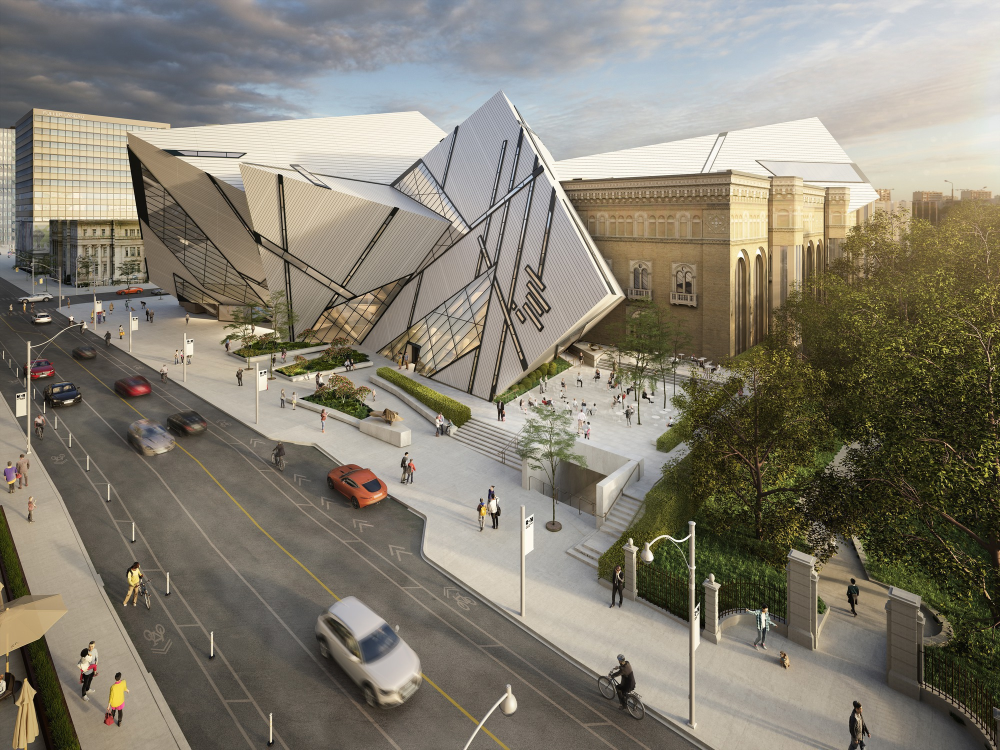

Toronto
Images

Introduction
This is my City, Toronto.
Toronto is the capital city
of the Canadian province of
Ontario. With a recorded population
of 2,794,356 people in 2021, it is the most
populous city in Canada. 2 of the most
iconic and famous places in Toronto
is the CN Tower and the Niagara Falls.
The CN Tower is one of the tallest
structures in the world! Also, the
Niagara Falls water is used to make
electricity. It is called Hydroelectricity.
Those are just some of the most
interesting facts about Toronto, Canada.
Places For Entertainment
Sports and Music
If you love sports, you will
love Scotiabank Arena.
Scotiabank Arena is an arena
for many sports such as basketball,
soccer, hockey, and baseball. All of
those sports have a toronto team. For
basketball the team is the Toronto
Raptors, for baseball it is the
Toronto Blue Jays, for hockey it is
the Toronto Marlies(Maple Leafs), and finally the
soccer team is Toronto F.C.(Football Club).
Also, the Scotiabank Arena hosts concerts for
famous musicians.

Aquariums
There are also aquariums in Toronto. The
most famous aquarium in Toronto is
Ripley's Aquarium. Ripley's Aquarium
has many things to do such as a playscape for children,
a shark tunnel to look at sharks in, many tanks of water
for many different species of sea creatures, and there is
a section to look and touch manta rays and shrimp.

Clifton Hill
If you want to have fun, then Clifton Hill
would be the best option to choose from.
Clifton Hill has tons of rides such as,
haunted roller coasters, the Frankenstein ride,
and many more. There is also lazer tag,
mirror mazes, lazer mazes, golf courses, and
an arcade! If you are hungry, then there are
tons of famous resteraunts such as Bston Pizza.
There are many stores to shop in. Finally,
the most famous thing in Clifton Hill is, the Eye.
The Eye is a ferris wheel which at the top can
give you a great view of Clifton Hill.

Must See Sites
CN Tower
As I mentioned in the introduction, the CN tower is
one of the, if not the most famous place in
Toronto. The CN Tower is a jaw-dropping 553 metres
(over 1100 feet) tall! The CN Tower is also one
of the busiest places in Toronto which is downtown.
Fun Fact: Ripley's Aquarium and the Scotiabank Arena
are in downtown too!
.jpg)
Niagara Falls
The Niagara Falls is one of the most beautiful places in
Toronto. About 28 million gallons of water fall down
every second. During night there are lights that make the
water even more eye catching. Another Fun Fact: Clifton
Hill is located about 2 minutes away from the Nagara Falls.

Royal Ontario Museum
The Royal Ontario Museum is the most famous museum in Toronto.
The Royal Ontario Museum is one of the largest museums
in North America. With over 1 million visits a year,
the Royal Ontario museum is the most visited museum
in Canada.

About Me
Main Information
Hi, my name is Krish Indrasenan. I am the author and coder of
this website. I am in 6th grade which means I am 11 years old.
I am 5 foot 5 inches which makes me the tallest person in my
class.
My Hobbies
I have quite a few hobbies. First of all, I love to do math.
My favourite thing to do in math is algebra. Algebra is where you
have to find what the value of a symbol is with equations to help solve
it. My other hobbies are sports. I love to play sports such as basketball,
soccer, baseball, cricket, table tennis, badminton, golf, air hockey, tennis,
and football. Today, I got into my school football team! I attended all three
tryouts which had running, catching, and throwing drills so my coach can see
our potential.